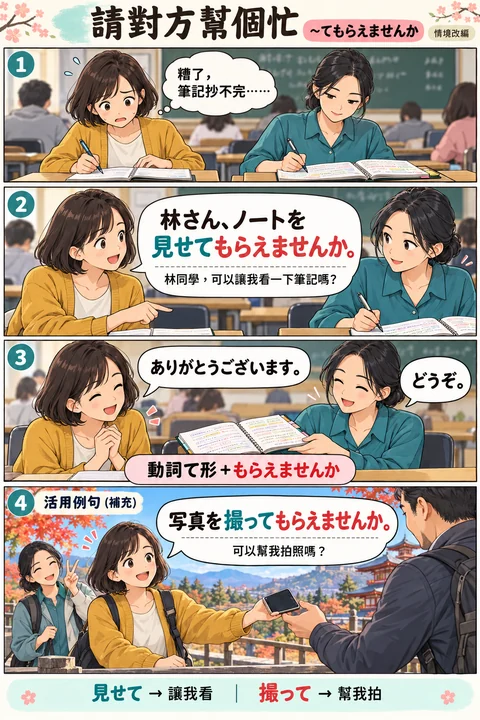
第1課 · 01
委婉地拜託別人
〜てもらえませんか
把直接的要求，換成更有禮貌的請求。
禮貌請求JAPANESE GRAMMAR · COMIC LIBRARY
一個情境，記住一個用法。
把難記的句型，放進生活裡。
第1課 5 張 · 第2課 4 張
第3課 6 張 · 第4課 7 張
第5課 6 張 · 跨課補充 1 張
初級複習 J1 · 13 張
初級複習 J2 · 17 張
初級複習 J3 · 16 張
初級複習 J4 · 33 張
初級複習 J5 · 20 張
顯示全部 128 張
128 張皆可在同一張卡切換日文版／英文版，搭配中文解說、Google 朗讀與逐句跟讀。點選漫畫即可放大。放大後可切換前後張，或開啟完整原圖 WebP 細看。

第1課 · 01
〜てもらえませんか
把直接的要求，換成更有禮貌的請求。
禮貌請求第1課 · 02
ようだ・ような・ように
句尾、修飾名詞、修飾動作，各有不同接法。
比喻第1課 · 03
こと・の：名詞化
把一個動作當成「一件事」，再接後面的句子。
名詞化第1課 · 04
AをBと言う・AというB
區分「把 A 叫作 B」和「叫作 A 的 B」。
名稱第1課 · 05
疑問詞＋ても／でも
無論誰、哪裡或什麼情況，後面的結果都不變。
讓步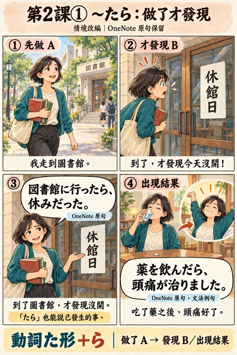
第2課 · 01
〜たら：變化／發現
做了 A，結果出現 B，或才發現 B。
變化／發現第2課 · 02
〜というのは：定義
詢問詞語的意思，再用解釋回答。
定義第2課 · 03
常體句＋という＋名詞
前面放具體內容，後面接新聞、消息或規則。
具體內容第2課 · 04
みたいだ・みたいな・みたいに
用日常對話記住比喻與舉例的三種接法。
比喻／舉例第3課 · 01
使役て形＋もらえませんか
借用手機的情境，記住「做動作的是我，對方准許我做」。
原句保留；回應另標為補充對話。第3課 · 02
ことにする・ことにしている
從決定早上 7 點起床，到每天持續遵守自訂規矩。
情境改編，原句保留。第3課 · 03
ことになる・ことになっている
東京出差的新安排、已排定行程，以及教室禁用手機的既定規則。
情境改編，原句保留。第3課 · 04
てほしい・ないでほしい
希望朋友來派對，也希望對方不要一直看手機。
情境改編，原句保留。第3課 · 05
様態そう・そうな・そうに
看天空、看拉麵、看笑容，分辨句尾、接名詞與接動詞的そう。
情境改編，原句保留。第3課 · 06
なさそう・そうもない
四個小情境，分辨形容詞的なさそう與動詞的そうもない。
原句與補充例句分開標示。第4課 · 01
ということです・ということですね
從天氣預報的轉述到店員重述換貨要求，分辨傳聞與確認。
原句與補充對話分別標示。第4課 · 02
の・なの
以唱歌與禁菸的對話，學習追問原因與說明理由。
情境改編，原句保留。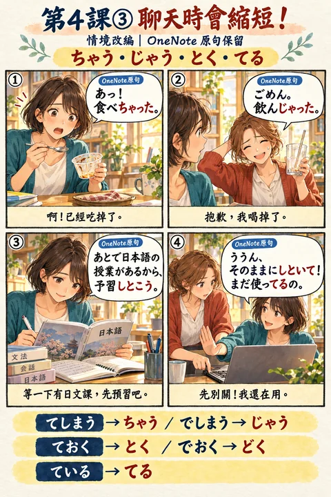
第4課 · 03
ちゃう・じゃう・とく・どく・てる
吃完甜點、喝掉果汁、課前預習與保留電腦狀態，記住常見口語縮約。
情境改編，原句保留。第4課 · 04
使役受身
被朋友要求唱日文歌，理解被迫做某事的使役受身。
原句與補充對話分別標示。第4課 · 05
である・中止形
把參訪與生活寫成文章，辨認書面語尾與連接句子的中止形。
情境改編，原句保留。第4課 · 06
がる・たがる
根據他人表露的情緒與行動，描述寂寞與想準時回家的意願。
原句與補充對話分別標示。第4課 · 07
こと・ということ
從家事與生活費的體驗，把整段內容轉成名詞性成分。
情境改編，原句保留。第5課 · 01
あ・そ：話題中的指示詞
用共同話題和新話題，分清あ與そ。
情境改編，原句保留。第5課 · 02
んじゃない？：委婉推測與建議
從找錢包與休息建議，理解んじゃない的推測語氣。
原句與補充對話分別標示。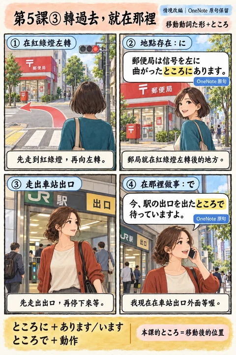
第5課 · 03
たところ：移動後的地點
用左轉和出站場景，分清ところに與ところで。
情境改編，原句保留。第5課 · 04
ようとする・ようとしない：正要與嘗試
分清正要開始、試著做與不肯嘗試。
情境改編，原句保留。第5課 · 05
だろう・のだろうか：推測與疑問
辨別推測、個人看法與心中的疑問。
情境改編，原句保留。第5課 · 06
助詞＋の：修飾名詞
把一起、方法、對象與範圍接到名詞前。
情境改編，原句保留。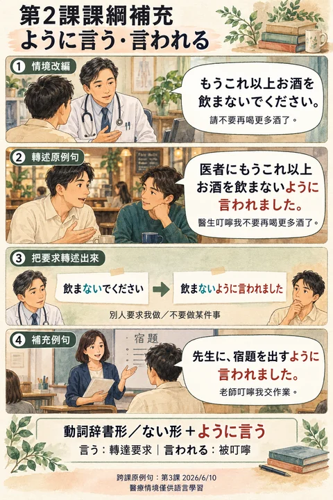
跨課補充 · 第2課課綱
ように言う・ように言われる
原例句來自第3課（2026/6/10），獨立收錄為跨課補充。
轉述叮嚀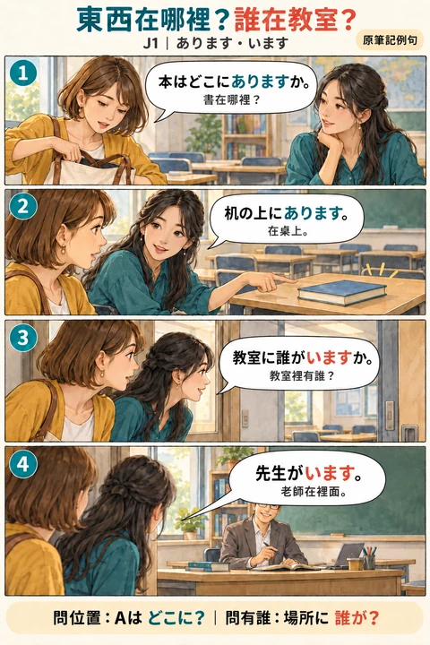
初級複習 J1 · 01
あります・います
問東西在哪裡用あります，問誰在場用います。
原筆記例句初級複習 J1 · 02
時間・日期讀法
在約時間的情境裡，練習四月四日、四時與九時的讀音。
情境補充例句初級複習 J1 · 03
量詞＋あります・動作
用いくつ詢問數量，量詞直接接存在或動作。
原筆記例句初級複習 J1 · 04
時間長度・頻率
分清花費的時間長度，以及一段時間內的次數。
原筆記例句初級複習 J1 · 05
ぐらい・だけ・しか
ぐらい表示大約，だけ限定數量，しか搭配否定。
原筆記例句初級複習 J1 · 06
數量＋も・は
數量加も表示超過預期，加は表示最低限度。
原筆記例句初級複習 J1 · 07
い・な形容詞否定
從天氣與歌手的對話，練習い・な形容詞否定。
原筆記例句初級複習 J1 · 08
形容詞過去式
用昨天與祭典的情境，練習形容詞過去肯定與否定。
原筆記例句初級複習 J1 · 09
くて・で 連接
い形容詞用くて，な形容詞與名詞用で連接。
原筆記例句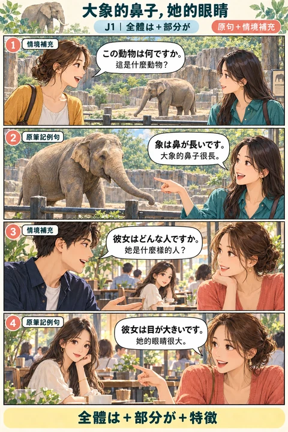
初級複習 J1 · 10
全體は＋部分が
先用は提出整體，再用が描述某個部分的特徵。
原句＋情境補充初級複習 J1 · 11
なる・する
なる說狀態轉變，する說自己動手改變。
原句＋情境補充初級複習 J1 · 12
より・のほうが・どちらも
用どちら提問，再用のほうが、より比較兩者。
原筆記例句初級複習 J1 · 13
範圍で＋いちばん
用で圈出比較範圍，再用いちばん說最喜歡或最突出。
原筆記例句初級複習 J2 · 01
ています：持續中的活動
這裡的「ています」也可說明持續中的工作、事業或學習。
原筆記例句初級複習 J2 · 02
知っています・知りません
一般問答：知道用「知っています」，不知道用「知りません」。
原筆記例句＋情境說明初級複習 J2 · 03
て：狀態・ながら：同時動作
先看情境：維持的狀態，還是同時進行的動作？
原筆記例句＋解說初級複習 J2 · 04
動詞變化
た形變化大致同て形：て↔た、で↔だ
依原筆記規則補充初級複習 J2 · 05
てみます・て来ます
てみる：試做｜て来る：做完再回來
原筆記例句＋情境補充初級複習 J2 · 06
あとで・てから
あとで：A之後B｜てから：先完成A，再B
原筆記例句＋情境補充初級複習 J2 · 07
たことがあります
經驗：たことがある｜一次也沒有：一度もない
依原句型補充＋原筆記例句初級複習 J2 · 08
たり～たりします
たり：列舉例子｜時態放最後的します
原筆記例句＋情境補充初級複習 J2 · 09
あげます・くれます・もらいます
あげる：我→他｜くれる：他→我｜もらう：我收到
原筆記例句初級複習 J2 · 10
てあげる・てくれる・てもらう
あげる：我幫他｜くれる：他幫我｜もらう：我得到幫助
原筆記例句初級複習 J2 · 11
主動幫忙的～ましょうか
主動提議：～ましょうか｜自然表達幫忙的心意
原筆記例句＋情境補充初級複習 J2 · 12
いただく・くださる
いただく：我承受恩惠｜くださる：對方給予幫助
原筆記例句初級複習 J2 · 13
やります・てやります
看對象與關係，別只背『給』。
原筆記例句＋補充說明初級複習 J2 · 14
所屬物的の
人の物品を＋てあげる／てくれる
原筆記例句＋解說初級複習 J2 · 15
送る・連れて来る的對象
先看動詞，再看人物接哪個助詞。
原筆記例句＋解說初級複習 J2 · 16
ないで：不做A而做B
ないで：沒有做A的狀態／不選A而做B
原筆記例句初級複習 J2 · 17
對象的に
向誰／給誰：人に｜先看原動詞的接法
原筆記例句＋情境補充初級複習 J3 · 01
動詞原形・ない形・なかった形
先認動詞類別，再對照做、不做與沒做。
初級複習 J3初級複習 J3 · 02
こと・ことができます
把動作當成一件事，也能說明可以做什麼。
初級複習 J3初級複習 J3 · 03
まえに
動詞、名詞與時間長度，接法各有不同。
初級複習 J3初級複習 J3 · 04
なければならない・ないと・なくてもいい
區分必須做、口語提醒與不必做。
初級複習 J3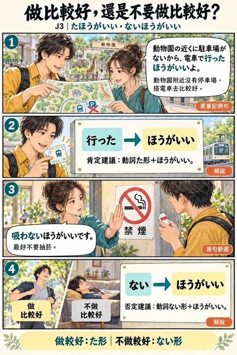
初級複習 J3 · 05
たほうがいい・ないほうがいい
用た形和ない形分別表達做或不做的建議。
初級複習 J3初級複習 J3 · 06
とき
動詞、名詞、い形與な形，各有不同接法。
初級複習 J3初級複習 J3 · 07
な形容詞・名詞の常体
用元気對照現在、過去的肯定與否定。
初級複習 J3初級複習 J3 · 08
けど・から
用けど說轉折，用だから說原因。
初級複習 J3初級複習 J3 · 09
どう？・どっち？
在親近的會話裡詢問感想與選擇。
初級複習 J3初級複習 J3 · 10
動詞常体＋名詞
食べる與食べた，分別描述將做和已做的動作。
初級複習 J3初級複習 J3 · 11
名詞修飾
先說明是哪一個，再接錶、圖書館、人或約定。
初級複習 J3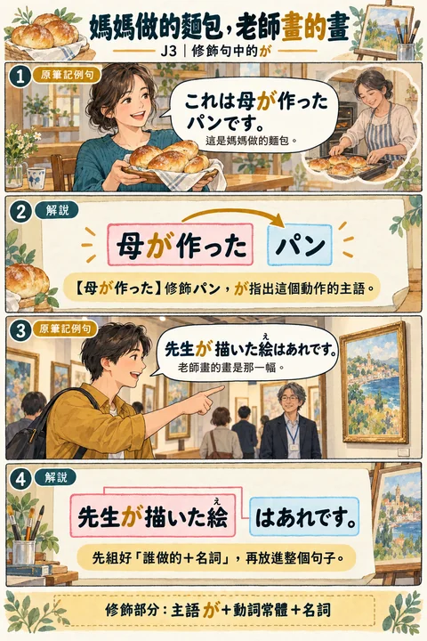
初級複習 J3 · 12
修飾句中的が
先組好誰做的加名詞，再放進完整句子。
初級複習 J3初級複習 J3 · 13
と言いました・と言っていました
引用的內容放在と前面，也能轉述當時的話。
初級複習 J3初級複習 J3 · 14
と思います
用常體表達推測、意見與對人的看法。
初級複習 J3初級複習 J3 · 15
意向形
依動詞類別練習行こう、食べよう、来よう與しよう。
初級複習 J3初級複習 J3 · 16
ようと思う・つもり・予定
以同一看電影情境對照想法、打算與排定的安排。
初級複習 J3初級複習 J4 · 01
んですか・んです
普通形＋んです；な形容詞與名詞的肯定句用なんです。疑問可詢問背景，回答可補充說明。
初級複習 J4初級複習 J4 · 02
んですが
～んですが先交代背景，接借用、問路等請求；語氣較柔和。
初級複習 J4初級複習 J4 · 03
し：評價・理由
し可串接評價或多項理由；～し、～から也能只說原因，讓結論由前文補足。不要把同好同壞當成絕對限制。
初級複習 J4初級複習 J4 · 04
可能形變化
第一類ます前的い段改為え段；第二類去ます加られます；来ます→来られます、します→できます。可能形後續按第二類活用。
初級複習 J4初級複習 J4 · 05
可能形的用法
可能形可表能力或條件允許；否定、過去也能活用。原筆記多用が，但を亦可，に等其他必要助詞保留。
初級複習 J4初級複習 J4 · 06
しか＋否定
しか與否定形式搭配表示限定。原本的を、が通常省略，其他助詞可保留，如君にしか。
初級複習 J4初級複習 J4 · 07
命令形
強命令形用於運動鼓勵、緊急提醒等。日常直接對人使用可能顯得粗魯。第1類ます前い段改え段後去ます；第2類ます改ろ；第3類為来い／しろ。
初級複習 J4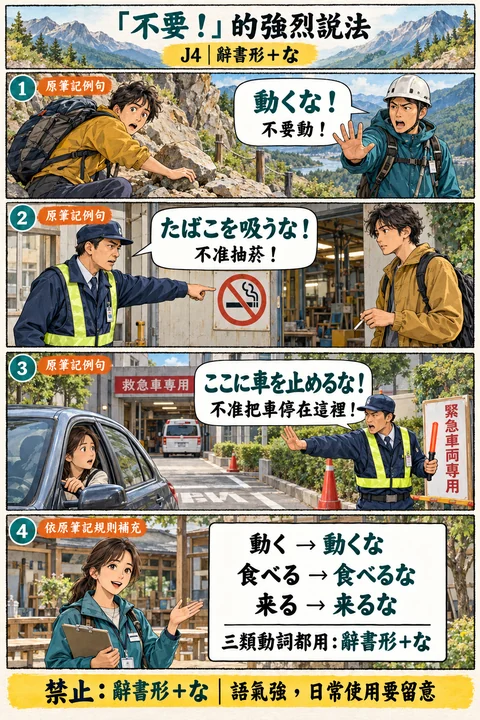
初級複習 J4 · 08
辭書形＋な
動詞辭書形後加な表直接禁止，語氣強，適合安全警告、嚴格制止等；一般請求可用ないでください。
初級複習 J4初級複習 J4 · 09
自動詞・ています
自動詞能描述事件、動作或狀態，不等於沒有動作主。以止まる示範事件與持續結果；は提示或對比特定物品。
初級複習 J4初級複習 J4 · 10
他動詞てあります
てある呈現某人有意做完後留下的結果狀態；這裡不必說出執行者。は可以把菜單等設為話題。
初級複習 J4初級複習 J4 · 11
もう～てある
てある既能表有意留下的結果，也能在語境中強調事情已先完成、準備妥當。
初級複習 J4初級複習 J4 · 12
てしまう：完成
てしまう可強調把事情完全做完，常搭配もう／全部；是否帶後悔、遺憾要看情境。
初級複習 J4初級複習 J4 · 13
てしまう・ちゃう・じゃう
てしまう可表懊悔、遺憾或非預期結果；口語てしまう→ちゃう，でしまう→じゃう。
初級複習 J4初級複習 J4 · 14
ておく：事前準備
為了接下來的目的先做好某事。前に重順序，までに標示期限。
初級複習 J4初級複習 J4 · 15
ておく：善後處理
使用完畢後先整理，讓下次使用更方便；洗っておいて可口語縮成洗っといて。
初級複習 J4初級複習 J4 · 16
ておく：維持原狀
因應情況暫時保持某個狀態；つけておく與閉めておく的情境不同。
初級複習 J4初級複習 J4 · 17
でしょう：推測・疑問・同感
でしょう可依線索作推測；でしょうか保留不確定地問；上揚でしょう？徵求同感。不是全部都叫客觀推測。
初級複習 J4初級複習 J4 · 18
かもしれません・かもしれない
依有限線索提出可能性，並非已確定事實；かもしれない是普通體。
初級複習 J4初級複習 J4 · 19
はず
はず：依已知資訊做合理預期。名詞＋の／な形容詞＋な；並非事實保證。
初級複習 J4初級複習 J4 · 20
ようです
ようです：根據觀察到的跡象推測。名詞＋の／な形容詞＋な；也能根據其他證據。
初級複習 J4初級複習 J4 · 21
は・も
は：話題／對比；數量＋は：至少。も：也；疑問詞＋も＋否定；數量＋も：竟然這麼多。
初級複習 J4初級複習 J4 · 22
の・へ・や・だけ
の：關聯／所屬／代替名詞；へ：方向；や：舉例，未列完；だけ：限定。
初級複習 J4初級複習 J4 · 23
で
で可表示：交通／工具、動作地點、比較範圍、行為人數或原因。看它接的是什麼。
初級複習 J4初級複習 J4 · 24
と
と：連接名詞、共同對象、引用內容；「一做A就B」也可表示規律或自然結果。
初級複習 J4初級複習 J4 · 25
が：能力・狀態・焦點
が常標出能力／理解的對象、狀態的主語或回答的焦點；不只一種用途。
初級複習 J4初級複習 J4 · 26
が：轉折・前言・主語
句尾が能轉折或引出請求；名詞修飾句裡，が標示動作主，有些情況也能用の。
初級複習 J4初級複習 J4 · 27
から・まで・までに
から：起點／原因；てから：先後。まで：持續到終點；までに：最晚於期限完成。
初級複習 J4初級複習 J4 · 28
を・に：移動與對象
を：動作對象、離開點或通過路線。に：到達／歸著點。助詞要和動詞一起記。
初級複習 J4初級複習 J4 · 29
に
に也表示時間點、給予來源／對象、頻率、存在處、目的；静かに是な形容詞的連用形。
初級複習 J4初級複習 J4 · 30
どれ・どちら・どの・どこ・誰
どれ可單用；どの後接名詞。どちら可問選擇或禮貌地點；誰的禮貌說法是どなた。
初級複習 J4初級複習 J4 · 31
何時・いつ・どのくらい・何番・いくら・いくつ
時間：何時／いつ／何月何日；多久：どのくらい；號碼：何番；價錢：いくら；個數：いくつ。
初級複習 J4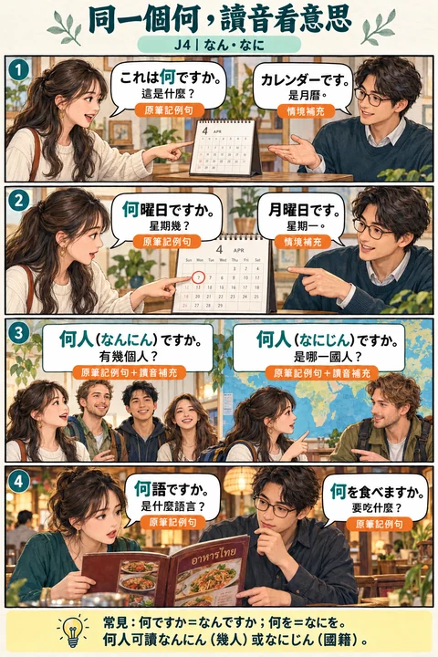
初級複習 J4 · 32
なん・なに
常見：何ですか＝なんですか；何を＝なにを。何人可讀なんにん（幾人）或なにじん（國籍）。
初級複習 J4初級複習 J4 · 33
どんな・どう・いかが・どうして
どんな＋名詞：問性質；どう：問感想／狀況；いかが：禮貌詢問或邀請；どうして：問理由。
初級複習 J4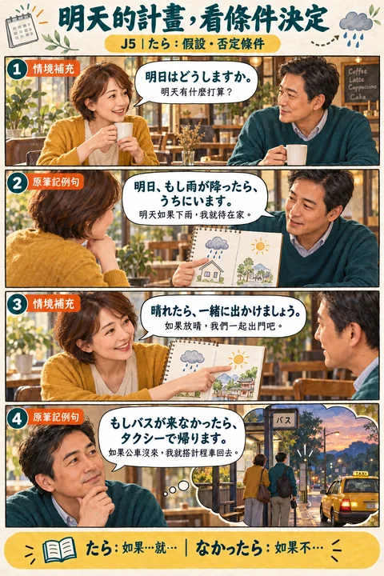
初級複習 J5 · 01
たら：假設・否定條件
たら表示「如果／當…成立，就…」。動詞用た形＋ら，否定用なかったら；い形容詞用かったら，な形容詞與名詞用だったら。
初級複習 J5初級複習 J5 · 02
たら：先完成，再接著做
此處たら指前項完成後的下一步，也能接請求或意向。這一用法常談未來；不可推成「たら一律不能用於過去」。
初級複習 J5初級複習 J5 · 03
ても・なくても
て形＋も表示「即使…也…」。否定用なくても；い形容詞用くても，名詞與な形容詞用でも。
初級複習 J5初級複習 J5 · 04
と：操作・指路
と可說明機器的固定反應，或沿路移動後看到的地點。這類結果句不接「請…／一起…」等意志請求。
初級複習 J5初級複習 J5 · 05
と：自然變化・個人反應
と也用來表達自然產生的變化與反覆出現的個人反應。牛乳例句在此只是角色的感受，不是人人都如此的健康結論。
初級複習 J5初級複習 J5 · 06
ば形：動詞變化
第一類將ます前的い段改え段再加ば；第二類去ます加れば；来ます→来れば、します→すれば。否定把ない改なければ。英語使用if句，不套用日語活用公式。
初級複習 J5初級複習 J5 · 07
ば：成立條件
ば著重後項成立的條件；い形容詞去い加ければ，いい→よければ。狀態條件後可以接「買います」等意向，不能一律禁止意志句。
初級複習 J5初級複習 J5 · 08
なら：承接話題給建議
なら可接住對方提出的話題或條件，再給建議。名詞與な形容詞可直接接なら；不是把所有條件句按意志強弱排成固定等級。
初級複習 J5初級複習 J5 · 09
ように：目標・避免
目的的ように常接可能形、非意志動詞或ない形：希望某種能力／狀態達成，或避免某件事。不是每個ように都只用原形，否定目的要用ない形。
初級複習 J5初級複習 J5 · 10
ために：目的・受益對象
動詞原形＋ために可表達自己要執行的目的；名詞＋のために可表示為某人／某事的利益而做。
初級複習 J5初級複習 J5 · 11
ために・ように對照
するために把「做一場好演說」當作行動目的；できるように把「變得能做到」當作想達成的狀態。英語不必硬做一對一文法對應。
初級複習 J5初級複習 J5 · 12
ようになる：能力轉變
可能形原形＋ようになりました表示從不會／不能，變成會／能。尚未達成可說まだ使えません；願望可說使えるようになりたい。
初級複習 J5初級複習 J5 · 13
ようにしている・ようにしてください
ようにしています表示刻意持續做／避免做；ようにしてください是提醒對方注意維持行為。個人喝水與不喝酒只是例句，不是通用健康建議。
初級複習 J5初級複習 J5 · 14
に：用途・評價
動詞原形＋の把動作名詞化，再接に表示用途或評價對象：のに使う／のに役に立つ。這個のに不是「明明…卻…」的逆接のに。
初級複習 J5初級複習 J5 · 15
にする：做選擇
名詞＋にします表示選擇或決定某個選項。選地點問どこに、選交通工具問何に，也能用いつに問時間。
初級複習 J5初級複習 J5 · 16
に：時間・金錢花費
動詞原形＋のに可指出花費時間／金錢的事情。數量＋も帶「竟然這麼多」；數量＋は在這種語境可表示至少。金額是原筆記的虛構例句數額。
初級複習 J5初級複習 J5 · 17
て・なくて：情緒・道歉
動詞て形／なくて可接自然產生的感受、感謝或道歉。否定原因用なくて；不能把這個用法與「不做A而做B」的ないで混為一談。
初級複習 J5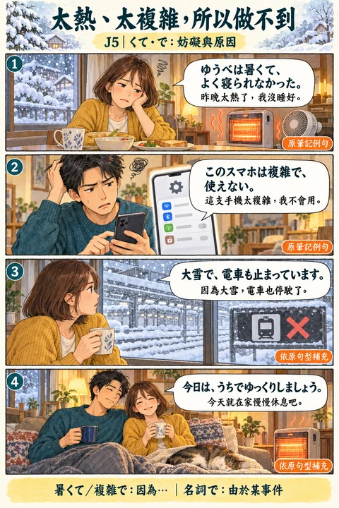
初級複習 J5 · 18
くて・で：妨礙與原因
い形容詞去い加くて；な形容詞加で，可說明做不到的原因。名詞＋で也能指出造成結果的事件。此處不是把所有て形都解讀成原因。
初級複習 J5初級複習 J5 · 19
ので：理由・請求・婉拒
普通形＋ので說明理由；名詞與な形容詞現在肯定用なので。可用於請求、解釋、婉拒，也可在句末留ので。て形可先串前一層原因。
初級複習 J5初級複習 J5 · 20
のに：意外・失望・省略
普通形＋のに表示結果與預期相反，常帶驚訝、失望或不滿。名詞與な形容詞現在肯定用なのに；句末停在のに可讓未說出的結果留給語境。
初級複習 J5